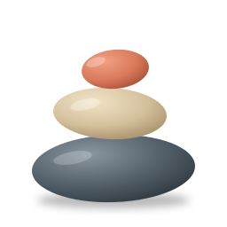

Great question! There are several important factors to consider when
choosing between these two options, and the answer really depends on
your specific situation, so let me walk you through the main points.
First, it's worth noting that both databases have their own strengths
and weaknesses, and many experienced developers hold differing views.
In general, though, it could be said that, broadly speaking, you may
want to think about the following aspects before making a decision:
1. Data model 2. Scalability 3. Team familiarity 4. Cost
I hope this helps! Let me know if you'd like me to go into more detail
on any of these, or if there is anything else I can help you with.
Skills for short, honest AI replies
pebble
Answer first. Cut the rest.
Finds the real question. Keeps the warnings.
9 skills0 dependenciesClaude · ChatGPT · Cursor · Gemini
